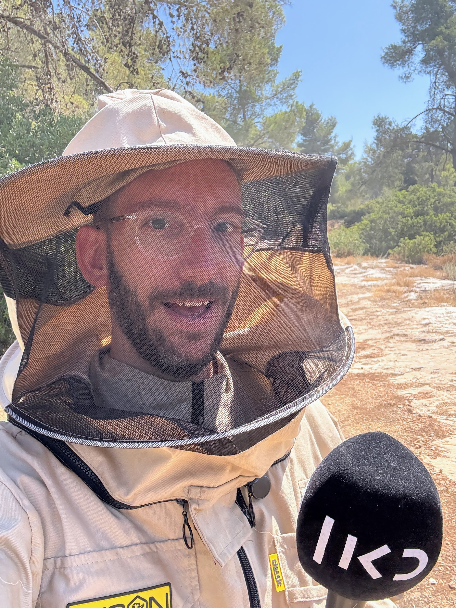

קצת עלינו
הסיפור שמאחורי המנה

שאול אמסטרדמסקי, צילום: מערכת כאן
מקורב לצלחת הוא מסע שבועי אל השווקים, המטבחים, השדות והמעבדות של ישראל.
בכל פרק, שאול אמסטרדמסקי יוצא לשטח כדי להבין למה אנחנו אוכלים מה שאנחנו אוכלים — ומי האנשים שמאחורי הצלחת. מהחידושים הטכנולוגיים שמחליפים את החקלאות המסורתית ועד לסודות המטבח שנשמרו דורות, אנחנו צוללים לעומק התרבות והכלכלה של האוכל הישראלי.
התוכנית משודרת בכאן רשת ב׳, בכל יום שישי בשעה 11:00. עריכה: אסף אביר. הפקה: אלון אמיצי.